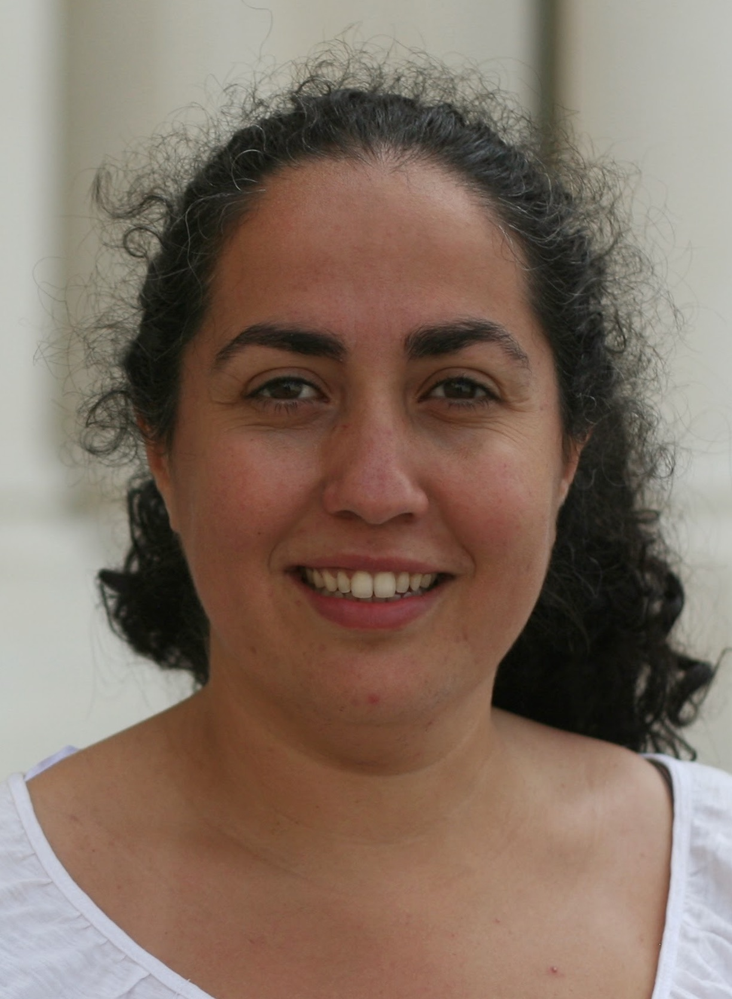

Home
|  |
Dr. Alicia Palacios alicia.palacios(at)uam.es Departamento de Química Facultad de Ciencias Universidad Autónoma de Madrid Tel: +34 914973019 |
Professor at Universidad Autónoma de Madrid
Dr. Alicia Palacios is Associate Professor at Universidad Autónoma de Madrid, with expertise on “High performance computing and ab initio calculations for the description of ultrafast process in gas-phase targets subject to attosecond laser pulses”. During her career, she has established solid international collaborations with experimental and theoretical groups, strengthened through several stays (Lawrence Berkeley National Lab from 2006 to 2009, and short stays at Université Bordeaux I, Universita di Trieste or, more recently, at DESY/FEL in Hamburg). Her academic and teaching activities include her dedication as Coordinator of the Master on Theoretical Chemistry and Computational Modeling involving 14 Spanish universities (2021-24); and a solid formation as professor (Certificate of Expert in University Teaching 2019). Chair of the Atomic, Molecular and Optical Physics Division at the European Physical Society (2022 to present). Member of the Editorial Boards of J. Phys. B and Communication Physics Journals, and Committee Member of the most relevant scientific international conferences in her field (currently: ICOLS, ECAMP, ATTO, CLEO-Europe). She received the Mildred Dresselhaus Junior Award in 2018 from Hamburg University and Cluster of Excellence CUI: Advanced Imaging for Matter.
Education
PhD in Theoretical and Computational Chemistry. Universidad Autónoma de Madrid Spain (UAM), 2006Master's Degree (D.E.A.) Inter-university PhD Program in Theoretical and Computational Chemistry, UAM, Spain, 2003
Graduate in Chemistry.Universidad Autónoma de Madrid Spain (UAM), 2001
Positions held
Professor (Profesora Titular) Universidad Autónoma de Madrid (UAM), Spain. Nov 2022 - presentAssociate Professor (Prof. Contratado Doctor) Universidad Autónoma de Madrid (UAM), Spain. Nov 2020 - Oct 2022
Ramón y Cajal Fellowship. Universidad Autónoma de Madrid (UAM), Spain. Nov 2015 - Oct 2020
Teaching Assistant (Prof. Ayudante Doctor). Universidad Autónoma de Madrid (UAM), Spain. Oct 2012 - Oct 2015
Post-doctoral position. Juan de la Cierva career track fellowship. UAM, Spain. Sep 2009 - Sep 2012
Post-doctoral position. Visiting Scholar. Lawerence Berkeley National Lab. Berkeley, CA, USA May 2006 - Sep 2009
Grants
Tenure-Track "Ramón y Cajal" Fellowship. Ministerio de Economía, Industria y Competitividad. 2015-2020.Post-doctoral Fellowship. Juan de la Cierva career track fellowship. Ministerio de Ciencia e Innovación. 2009-12.
Post-doctoral Fellowship. Lawrence Berkeley National Lab., CA, USA. Ministerio de Educación y Ciencia. 2007-09
Ph.D. Fellowship (F.P.U. Beca de Formación de Profesorado Universitario). Ministerio de Educación y Ciencia. 2002-06.
Stay Grant for University Professors and Ph.D. students. Ministerio de Ciencia y Tecnología. Spain. 2002.
Master's Degree Grant (Ayuda de Tercer Ciclo). Grant for Ph.D. Courses. Universidad Autónoma de Madrid. 2001-2002.
Research Grant for Last Year Majors (Beca colaboración en investigación). Chemistry Department. UAM. 2000-2001.
Awards
Mildred Dresselhaus Junior Award 2018. Cluster of Excellence Hamburg Centre for Ultrafast Imaging (CUI).PhD Special Award. Universidad Autónoma de Madrid. 2006. PhD with European Mention.
PhD Program with "Quality Mention", Ministry of Spain (ref. MCD2003-00675)
Publications
A complete list of publications is available.Publication list and metrics can be found at Google Scholar.